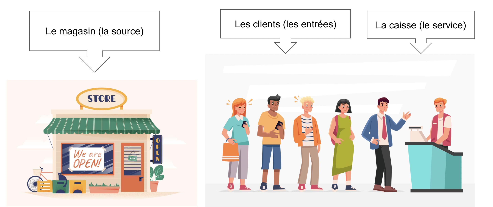

La théorie des file d’attente
définition de la file d’attente:
Une file d’attente est un regroupement de personnes ou de choses, qui attendent de manière organisée. Cela peut être des objets sur une chaîne de montage, les voitures entrant sur l’autoroute, des avions attendant de décoller, ou bien des personnes qui font leur course, qui attendent aux toilettes, ou des groupes qui vont à un concert. Il attendent en général un service ou un bien, payer leurs courses, faire la queue chez le médecin, attendre avec son groupe pour rentrer en soirée, faire atterrir ou bien décoller des avions, les applications sont illimitées.
En principe, cet événement arrive lorsque la demande ne peut être satisfaite aussi vite que l’offre puisse être fournie, mais cela n’influence pas le prix de l’offre pour autant, qui lui-même n’est pas toujours existant exemple: “le prix est inexistant sur les pistes de décollage des aéroports”.
L’analyse d’un point de vue mathématique a vu le jour avec Agner Krarup Erlang. Collaborateur scientifique pour la Copenhagen Telephone Company, il était chargé d’estimer la capacité de la centrale téléphonique de Copenhague, en d’autre terme le nombre de commutateurs et le nombre d'employés pour les changer. A l’époque où les numéros de téléphone n’existaient pas, tous les téléphones étaient reliés à une centrale qui se chargeait de nous brancher avec notre correspondant à l’aide de commutateurs manipulés par des employés (des opérateurs, ou plutôt des opératrices). En bref Erlang à écrit de nombreuse théorie de 1909 à 1917 qui sont réuni dans deux articles, The theory of probability and telephone conversations et Solution of some problems in the theory of probability of significance in automatic telephone exchanges.
Ces recherches ont ouvert la voie à de nombreux chercheurs, dont un pour qui nous donnerons une attention particulière. Mais avant cela il nous faut mettre en lumière les caractéristiques d’une file d’attente.
Les 6 caractère commun à une file d’attente
Les entrées
Ce sont les personnes ou les choses qui arrivent pour consommer ou bénéficier du service, par exemple, la fréquence des avions prêts à décoller, ou bien les personnes prêtes à embarquer.
On se concentre généralement sur leur fréquence d'arrivée qui peut-être régulière, ou bien aléatoire.
Les sortis
Ce sont ceux qui viennent consommer ou bénéficier du service. On pense souvent qu’ils n’ont pas d’influence sur l'efficacité d’une file d’attente, cependant il arrive parfois de devoir les prendre en compte, par exemple, les checking des bagages dans les aéroports nous fait vider nos sac, pour qu’ils puissent être vérifier, mais le moment on l’on récupère nos affaire est la sortis et sur cas elle n’est pas instantané.
On y analyse la capacité et la vitesse de sortie.
Les canaux de service
Les lieux où sont fournis les services. Ils peuvent être un ou plusieurs, exemple: un seul WC, ou bien plusieurs caisses de supermarché.
On y analyse la vitesse du service et le nombre de canaux de distribution.
Le système de distribution
C’est tout simplement la manière dont le service le service lui-même est distribué. Il existe plusieurs manières mais on peut se concentrer sur les trois principales.
-
Premier arrivé, premier servis:
- C’est le plus connue de tous et le plus utilisé surtout pour les gestion de flux humain.
-
Dernier arrivé, premier servis:
- Il est assez connu dans les systèmes de remplissage ou d’empilement, exemple: lorsqu’un ferry se remplit de véhicule et que son entrée est aussi sa sortie, alors les premier véhicule à embarquer seront les derniers à débarquer.
-
Servis aléatoire:
- Son nom est assez explicite.
-
Service à la priorité:
- Assez peu connus pourtant, tous les services d’urgence hospitalier fonctionnent avec.
Le maximum d’entrée autorisé dans le système
Le nombre maximum de choses ou de personnes que la file d’attente peut supporter, cela n’est pas forcément lié à la quantité d'offres distribuables.
La source d’appel
Il sert à connaître le contexte dans lequel évolue la file d’attente, car une file d’attente n’est pas perçue de la même manière pour un magasin de vêtement, que pour les services d’urgences d’un Hôpital.
Encore quelques notions
 Les entrées et les services sont appelés le système.Kendall notation the Queue Theory
Afin de réduire les effets négatifs d'une file d'attente, il faut pouvoir mesurer ses performances. Les théories sur les files d'attentes ont vu le jour et la notation de Kendall avec elle. Elle a pour but de déterminer les mesure de performance d'une queue, qui peuvent être utilisées pour concevoir des services. Il faut comprendre que dans bien des cas, l'attente pour un service ne peut être éliminée complètement sans engendrer des coûts excessifs.
La formule de Kendall est la suivante (A/B/C):(D/E/F).
A représente le flux interval d'arriver, on le modélise comme on le souhaite nombre d’unité qui arrive par heure, par minute par seconde, par jour, etc...
B est le temps de distribution d’un service. Il est important de préciser que dans exemple, nous ne prendrons pas en compte les variations de temps de service, mais plutôt une moyenne pour faciliter le calcul.
C est le nombre de points de distribution.
D est la discipline du système. exemple “premier arrivé premier servis”.
E est le nombre maximum admis dans le système. Il est la plupart du temps infinis mais il peut être définis
F qui est la source d’appel, qui peut être définie ou indéfinie. Cette dernière lettre n’est pas tout le temps prise en compte dans les calculs, du fait qu’elle dépend de l’appréciation de ceux qui l'analysent.
Si vous l’avez remarqué, la notation de Kendall prend en compte les 6 caractéristiques d’une file d’attente émise un peu plus tôt.
Maintenant prenons un exemple simple de type M/M/1 pour la mettre en pratique.
Nous sommes les gérants d’un fast-food et nous souhaitons connaître le nombre d'employés qu’il nous faudrait pour servir les clients qui viennent prendre un café, sans faire patienter trop longtemps les consommateurs, mais aussi sans trop dépenser en ressources humaines. Nous avons pu calculer qu’en moyenne, 4 nouveaux clients arrivent toutes les 10 min et chaque client dépensent en moyenne 12 € chez nous. Nos employés, eux, mettent en moyenne 5 min à servir un client et ils sont 2 baristas pour gérer le flux de clients, payé 12€ brut de l’heure.Avec toutes ses données on a:
- L'intervalle d'arrivé que l’on nommera “𝜆”, qui est de 4 personnes toutes les 10 min, 60 min/10 min vaut 6 fois 4,, donc 24 par heure.
- Le temps de distribution du service que l’on nommera “Ts”, qui est de 1 toute les 5 min, 60 min/5 min vaut 12, donc 12 clients par heure
- Le nombre de distributeurs que l’on nommera “Ns”, qui est de 3 car il y a trois employés
- Le coût d'un service que l’on nommera “Cs”, qui est de 12 € par heure.
- Le coût de l’attente que l’on nommera “Ca”, qui lui est le nombre de personnes qui attendent multiplié par la dépense moyenne des clients. Il faut prendre en compte l’intervalle d’arriver moins la capacité d’un distributeur en même temps, c’est-à-dire 4 personnes toutes les 10 min moins 1 personne toutes 5min, donc 2 personnes servi toutes les 10min. Cela fait 4-2 toutes les 10min ou 24-12 par heure, 12 personnes par heure qui attendent pour 1 service.
Chose à savoir dans une formule M/M/1 ou M/M/S, l’intensité du trafic ne peut dépasser 1. On le calcule grâce l’intervalle d'arriver divisé par temps de service multiplié par le nombre de distributeurs.
𝜆/Ns*Ts --> 24/(3*12) =0.66
Nous avons désormais tous les éléments pour calculer le nombre d’employés optimal en fonction de leur coût et du temps de service.
 Le nombre optimal de server.
Le nombre optimal de server.
Mais avant ça nous avons besoin de connaître le temps d’attente d’attente estimé dans la file, que l’on nommera“Wq”.
Wq = 𝜆/((Ns*Ts)*((Ns*Ts)-𝜆))
Wq = 24/((3*12)*((3*12)-24))
Wq = 24/(36*12)
Wq = 0.06 par heure cela équivaut à peu près à 3 min et 20s
Puis enfin pour connaître le nombre d’employés optimal pour servire nos client on calcule le coût total de l’attente plus le coût des services et cela pour différente quantité de services
Ns * Cs + Wq * Ca
| Nombre de canaux | Coût des canaux | Coût de l'attente | Total des coûts |
|---|---|---|---|
| 3 | 36,00 € | 144,00 € | 180,00 € |
| 4 | 48,00 € | 72,00 € | 120,00 € |
| 5 | 60,00 € | 48,00 € | 108,00 € |
| 6 | 72,00 € | 36,00 € | 108,00 € |
| 7 | 84,00 € | 28,80 € | 112,80 € |
| 8 | 96,00 € | 24,00 € | 120,00 € |
| 9 | 108,00 € | 20,57 € | 128,57 € |
| 10 | 120,00 € | 18,00 € | 138,00 € |
Le résultat est qu’il est préférable d'engager 5 ou 6 employés pour traiter le flux de client de façon optimale.
Cette démonstration n’est que la partie émergée de l’iceberg en termes d’analyse mathématique du sujet, il existe encore des scénarios différents avec leur formule qui leur est propre, nous aurions pu étudier la file d’attente de la production d’un menu, qui elle est composé de plusieurs phases, dont certaines phases dépendent les unes des autres. L’important est de comprendre que cet outil, fait partie de l’arsenal d’un business pour les entreprises, bien qu’il soit majoritairement utilisé par de grandes entreprises qui standardise leur production.
Cet outil, complète l’aspect psychologique étudié par certains chercheurs comme Richard Larson surnommée Dr.Queue, qui eux s'attardent sur les méthodes pour baisser le mécontentement des clients, lorsque le système d’une file d’attente ne peut être modifié. Il parle souvent des heures de pointe devant les ascenseurs et explique que physiquement on ne peut pas améliorer le trafic, à moins de détruire le bâtiment et le reconstruire avec plus d’ascenseurs. Cependant on peut réduire le désagrément de l’attente, en plaçant des miroirs à chaque étage, pour distraire les utilisateurs.
 New Research on the Theory of Waiting Lines (Queues), Including the Psychology of Queuing
New Research on the Theory of Waiting Lines (Queues), Including the Psychology of Queuing
En conclusion, les mathématiques des files d’attentes permet de résoudre de nombreux soucis de gestion des flux, mais lorsqu’il est question de personne, la psychologie des file d’attente est aussi importante que les mathématiques, la gymnastique est certe bien différente, car comparé aux math, il ne suffit pas de faire varier le flux de client, le nombre de distributeur, ou le temps de service. Cette approche demande parfois plus de créativité et de compréhension du client, mais il n’en reste pas moins que cette approche est efficace et la solution peut être souvent moins coûteuse.
Rédigé par ROUEK Stéphane.